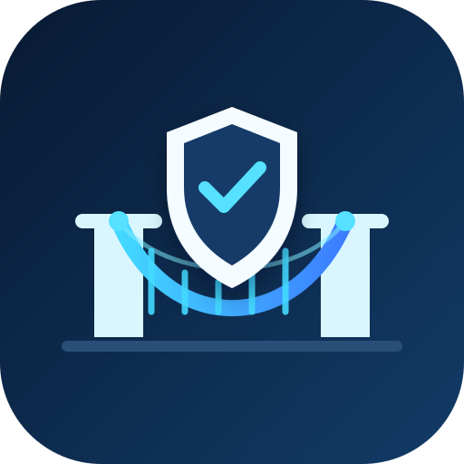

Programmable settlement that releases verified CVA funds by milestone—and fails safely when a counterparty's identity or asset eligibility changes.
Business plan & product deck · August 2026
Importers and exporters routinely rely on slow bank instruments, fragmented escrow providers, and manual compliance checks. These systems may verify a party at onboarding but struggle to react when credentials expire, sanctions status changes, or settlement assets prove ineligible while goods are in transit.
Approximate annual global maritime trade value.
Typical working-capital pressure from trade payment terms.
Revoked or expired identity blocks the next value-moving action.
Every decision ties to policy evidence and transaction hashes.
BridgeSure creates a trade-specific escrow between a verified exporter and importer. The buyer funds the escrow with a Cleanverse Verified Asset (CVA). Payment is released in configurable portions when milestones are submitted and current compliance checks pass.
A €10,000 shipment with 30% released on dispatch documentation, 40% on in-transit confirmation, and 30% on delivery. A revoked importer credential before the final release automatically blocks settlement.
SME exporters and importers, freight platforms, licensed payment institutions, trade-finance desks, and compliance teams.
Wallet-bound, bank-verified credentials identify the exporter, importer, and optional logistics attestor. Status is queried at creation and before every release, refund, or withdrawal.
Escrows accept only verified, traceable assets. Provenance and transfer restrictions travel with the settlement asset instead of living in a separate database.
Pre-transaction checks evaluate identity, asset, jurisdiction, amount, and milestone before any value moves.
Each settlement leg carries attribution data and produces an audit packet with reason codes and on-chain evidence.
BridgeSureEscrow manages the state machine; TradeRegistry anchors trade and document hashes; ComplianceAdapter isolates Cleanverse sandbox/API calls; AuditEmitter produces indexable lifecycle events; a web console presents live decisions.
Existing trade settlement is expensive and operationally fragmented. Crypto escrow improves programmability but often lacks verified counterparties, compliant assets, and a safe response to mid-trade status changes.
Stablecoins and tokenized assets make programmable settlement practical; institutions still need identity, asset provenance, and evidence before deploying capital.
Start with one corridor, one CVA stablecoin, and milestone escrow. Prove a high-value control: a release that safely stops after revocation.
Competitors cover lending, issuance, agents, AMMs, and invoice finance. BridgeSure specializes in compliance continuity inside real trade settlement.
Procurement escrow, construction retainage, merchant settlement, receivables finance, and multi-chain settlement.
Cross-border SMEs working with fintech payment providers; freight and logistics marketplaces; licensed trade-finance desks; and institutions that need controlled stablecoin settlement without building their own compliance stack.
A small fee on funded and released escrow volume, shared with distribution or payment partners where appropriate.
Monthly access to workflow configuration, roles, limits, policy templates, and compliance-console features.
Implementation and API integration for fintechs, logistics platforms, and regulated institutions.
Premium audit exports, retention, analytics, and institution-specific evidence packages.
BridgeSure is designed as non-custodial programmable escrow with explicit hold/refund states. The MVP will use sandbox credentials and testnet funds; production pilots require legal, custody, and jurisdiction-specific review with licensed partners.
Show the happy path first, then change one identity state in the sandbox and repeat the exact same release. The contrast—payment succeeds while compliant, then fails closed after revocation—makes the value immediately legible.
Reduce manual release time from days to minutes.
100% of value-moving actions pass an explicit policy gate.
One-click audit packet for every trade lifecycle.
One corridor, one asset, one licensed partner.